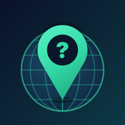

GeoGuesslyPrivacy Policy
Last updated: October 3, 2026
Who we are
GeoGuessly ("the app") is a geography quiz game developed by Sadık Çoban ("we"). This policy explains what data the app processes and why. Questions: cobansadik99@gmail.com.
No account, data stays on your device
You don't create an account. Your coins, unlocked regions, statistics and settings are stored only on your device.
Services that process data
- Google AdMob (ads): shows ads and measures their performance. It may process your device's advertising identifier (only if you allow tracking), IP address, device and app information and how you interact with ads.
- Google Firebase Analytics: how the app is used (for example games played, purchases and screens viewed), together with device information and an app instance identifier, so we can improve the game.
- Google Firebase Crashlytics: crash reports with device information and the app's state, so we can fix bugs.
- Apple Game Center: in live matches your Game Center name and player ID are shared with the other players in the match through Apple.
- Apple App Store: purchases are processed by Apple. We never see your payment details; we only receive confirmation that a purchase was made.
Your choices
Apple asks whether the app may track you. You can change this anytime in iOS Settings → Privacy & Security → Tracking.
In the EEA, the UK and Switzerland the app asks for your consent before personalised ads and analytics. You can change your choice anytime in the app under Shop → Privacy settings. If you decline, you still see ads, but they are not personalised.
Challenge links
When you share a challenge, the link only contains the game settings and your scores. It contains no personal data.
Sharing
We don't sell your personal data. Data is shared only with the providers above, under their own privacy policies: Google · Google (partners) · Apple.
Retention
Data on your device stays until you delete the app. Analytics data is kept for up to 14 months and crash reports for up to 90 days.
Children
The app is not directed at children under 13 and we don't knowingly collect their data.
Your rights
Depending on where you live (for example under the GDPR), you can ask for access to, correction or deletion of your data, or object to its processing. Deleting the app removes all data stored on your device. For anything else, write to cobansadik99@gmail.com.
Changes
If this policy changes, we will update this page and the date above.
Gizlilik Politikası
Son güncelleme: 3 Ekim 2026
Biz kimiz
GeoGuessly ("uygulama"), Sadık Çoban ("biz") tarafından geliştirilen bir coğrafya bilgi oyunudur. Bu politika, uygulamanın hangi verileri neden işlediğini açıklar. Sorularınız için: cobansadik99@gmail.com.
Hesap yok, veriler cihazınızda
Hesap oluşturmazsınız. Coinleriniz, açtığınız bölgeler, istatistikleriniz ve ayarlarınız yalnızca cihazınızda saklanır.
Veri işleyen hizmetler
- Google AdMob (reklamlar): reklam gösterir ve performansını ölçer. Cihazınızın reklam kimliğini (yalnızca takibe izin verirseniz), IP adresinizi, cihaz ve uygulama bilgilerini ve reklamlarla etkileşiminizi işleyebilir.
- Google Firebase Analytics: oyunu geliştirebilmemiz için uygulamanın nasıl kullanıldığını (örneğin oynanan oyunlar, satın almalar, görüntülenen ekranlar) cihaz bilgileri ve bir uygulama kimliğiyle birlikte toplar.
- Google Firebase Crashlytics: hataları düzeltebilmemiz için cihaz bilgileri ve uygulamanın durumunu içeren çökme raporları toplar.
- Apple Game Center: canlı maçlarda Game Center adınız ve oyuncu kimliğiniz Apple aracılığıyla maçtaki diğer oyuncularla paylaşılır.
- Apple App Store: satın almalar Apple tarafından işlenir. Ödeme bilgilerinizi asla görmeyiz; yalnızca satın almanın yapıldığına dair onay alırız.
Seçimleriniz
Apple, uygulamanın sizi takip edip edemeyeceğini sorar. Bunu istediğiniz zaman iOS Ayarlar → Gizlilik ve Güvenlik → Takip bölümünden değiştirebilirsiniz.
Avrupa Ekonomik Alanı, Birleşik Krallık ve İsviçre'de uygulama, kişiselleştirilmiş reklam ve analizden önce onayınızı ister. Tercihinizi uygulamada Mağaza → Gizlilik ayarları bölümünden istediğiniz zaman değiştirebilirsiniz. Reddederseniz reklam görmeye devam edersiniz ama reklamlar kişiselleştirilmez.
Meydan okuma bağlantıları
Bir meydan okumayı paylaştığınızda bağlantı yalnızca oyun ayarlarını ve puanlarınızı içerir. Kişisel veri içermez.
Paylaşım
Kişisel verilerinizi satmayız. Veriler yalnızca yukarıdaki hizmet sağlayıcılarla, kendi gizlilik politikaları kapsamında paylaşılır: Google · Google (partners) · Apple.
Saklama süresi
Cihazınızdaki veriler uygulamayı silene kadar kalır. Analiz verileri en fazla 14 ay, çökme raporları en fazla 90 gün saklanır.
Çocuklar
Uygulama 13 yaşından küçük çocuklara yönelik değildir ve bilerek onların verilerini toplamayız.
Haklarınız
Yaşadığınız yere bağlı olarak (örneğin GDPR veya KVKK kapsamında) verilerinize erişim, düzeltme veya silme talep edebilir ya da işlenmesine itiraz edebilirsiniz. Uygulamayı silmek cihazınızdaki tüm verileri kaldırır. Diğer talepler için cobansadik99@gmail.com adresine yazın.
Değişiklikler
Bu politika değişirse bu sayfayı ve yukarıdaki tarihi güncelleriz.
Política de privacidad
Última actualización: 3 de octubre de 2026
Quiénes somos
GeoGuessly ("la app") es un juego de preguntas de geografía desarrollado por Sadık Çoban ("nosotros"). Esta política explica qué datos trata la app y por qué. Preguntas: cobansadik99@gmail.com.
Sin cuenta, los datos se quedan en tu dispositivo
No creas ninguna cuenta. Tus monedas, regiones desbloqueadas, estadísticas y ajustes se guardan solo en tu dispositivo.
Servicios que tratan datos
- Google AdMob (anuncios): muestra anuncios y mide su rendimiento. Puede tratar el identificador de publicidad de tu dispositivo (solo si permites el rastreo), tu dirección IP, información del dispositivo y de la app y tu interacción con los anuncios.
- Google Firebase Analytics: cómo se usa la app (por ejemplo partidas jugadas, compras y pantallas vistas), junto con información del dispositivo y un identificador de instancia de la app, para mejorar el juego.
- Google Firebase Crashlytics: informes de fallos con información del dispositivo y del estado de la app, para corregir errores.
- Apple Game Center: en las partidas en vivo, tu nombre e ID de jugador de Game Center se comparten con los demás jugadores a través de Apple.
- Apple App Store: las compras las procesa Apple. Nunca vemos tus datos de pago; solo recibimos la confirmación de la compra.
Tus opciones
Apple te pregunta si la app puede rastrearte. Puedes cambiarlo cuando quieras en Ajustes de iOS → Privacidad y seguridad → Rastreo.
En el EEE, el Reino Unido y Suiza la app te pide consentimiento antes de mostrar anuncios personalizados y usar analíticas. Puedes cambiar tu elección cuando quieras en la app, en Tienda → Ajustes de privacidad. Si no aceptas, seguirás viendo anuncios, pero no personalizados.
Enlaces de desafío
Cuando compartes un desafío, el enlace solo contiene los ajustes de la partida y tus puntuaciones. No contiene datos personales.
Compartir datos
No vendemos tus datos personales. Solo se comparten con los proveedores anteriores, según sus propias políticas de privacidad: Google · Google (partners) · Apple.
Conservación
Los datos de tu dispositivo se conservan hasta que borres la app. Los datos de analítica se guardan hasta 14 meses y los informes de fallos hasta 90 días.
Menores
La app no está dirigida a menores de 13 años y no recopilamos sus datos a sabiendas.
Tus derechos
Según dónde vivas (por ejemplo, con el RGPD), puedes solicitar acceso, rectificación o supresión de tus datos, u oponerte a su tratamiento. Al borrar la app se eliminan todos los datos de tu dispositivo. Para cualquier otra cosa, escribe a cobansadik99@gmail.com.
Cambios
Si esta política cambia, actualizaremos esta página y la fecha de arriba.
Política de Privacidade
Última atualização: 3 de outubro de 2026
Quem somos
GeoGuessly ("o app") é um jogo de perguntas de geografia desenvolvido por Sadık Çoban ("nós"). Esta política explica quais dados o app trata e por quê. Dúvidas: cobansadik99@gmail.com.
Sem conta, os dados ficam no seu aparelho
Você não cria uma conta. Suas moedas, regiões desbloqueadas, estatísticas e configurações ficam armazenadas apenas no seu aparelho.
Serviços que tratam dados
- Google AdMob (anúncios): exibe anúncios e mede seu desempenho. Pode tratar o identificador de publicidade do aparelho (somente se você permitir o rastreamento), endereço IP, informações do aparelho e do app e sua interação com os anúncios.
- Google Firebase Analytics: como o app é usado (por exemplo partidas jogadas, compras e telas vistas), junto com informações do aparelho e um identificador de instância do app, para melhorarmos o jogo.
- Google Firebase Crashlytics: relatórios de falhas com informações do aparelho e do estado do app, para corrigirmos erros.
- Apple Game Center: nas partidas ao vivo, seu nome e ID de jogador do Game Center são compartilhados com os outros jogadores por meio da Apple.
- Apple App Store: as compras são processadas pela Apple. Nunca vemos seus dados de pagamento; recebemos apenas a confirmação da compra.
Suas escolhas
A Apple pergunta se o app pode rastrear você. Você pode mudar isso a qualquer momento em Ajustes do iOS → Privacidade e Segurança → Rastreamento.
No EEE, no Reino Unido e na Suíça o app pede seu consentimento antes de anúncios personalizados e análises. Você pode mudar sua escolha a qualquer momento no app, em Loja → Configurações de privacidade. Se recusar, você continua vendo anúncios, mas sem personalização.
Links de desafio
Quando você compartilha um desafio, o link contém apenas as configurações da partida e suas pontuações. Não contém dados pessoais.
Compartilhamento
Não vendemos seus dados pessoais. Os dados são compartilhados apenas com os provedores acima, conforme suas próprias políticas de privacidade: Google · Google (partners) · Apple.
Retenção
Os dados no seu aparelho ficam até você apagar o app. Os dados de análise são mantidos por até 14 meses e os relatórios de falhas por até 90 dias.
Crianças
O app não é destinado a menores de 13 anos e não coletamos seus dados intencionalmente.
Seus direitos
Dependendo de onde você mora (por exemplo, pela LGPD ou pelo GDPR), você pode solicitar acesso, correção ou exclusão dos seus dados, ou se opor ao tratamento. Apagar o app remove todos os dados do seu aparelho. Para qualquer outra solicitação, escreva para cobansadik99@gmail.com.
Alterações
Se esta política mudar, atualizaremos esta página e a data acima.
Datenschutzerklärung
Zuletzt aktualisiert: 3. Oktober 2026
Wer wir sind
GeoGuessly („die App“) ist ein Geografie-Quiz von Sadık Çoban („wir“). Diese Erklärung beschreibt, welche Daten die App verarbeitet und warum. Fragen: cobansadik99@gmail.com.
Kein Konto, Daten bleiben auf deinem Gerät
Du legst kein Konto an. Deine Münzen, freigeschalteten Regionen, Statistiken und Einstellungen werden nur auf deinem Gerät gespeichert.
Dienste, die Daten verarbeiten
- Google AdMob (Werbung): zeigt Werbung und misst ihre Leistung. Dabei können die Werbe-ID deines Geräts (nur wenn du Tracking erlaubst), deine IP-Adresse, Geräte- und App-Informationen sowie deine Interaktion mit Anzeigen verarbeitet werden.
- Google Firebase Analytics: wie die App genutzt wird (z. B. gespielte Runden, Käufe und angesehene Bildschirme), zusammen mit Geräteinformationen und einer App-Instanz-ID, damit wir das Spiel verbessern können.
- Google Firebase Crashlytics: Absturzberichte mit Geräteinformationen und dem Zustand der App, damit wir Fehler beheben können.
- Apple Game Center: In Live-Matches werden dein Game-Center-Name und deine Spieler-ID über Apple mit den anderen Spielern geteilt.
- Apple App Store: Käufe werden von Apple abgewickelt. Wir sehen nie deine Zahlungsdaten, sondern erhalten nur eine Bestätigung des Kaufs.
Deine Wahlmöglichkeiten
Apple fragt, ob die App dich tracken darf. Du kannst das jederzeit unter iOS-Einstellungen → Datenschutz & Sicherheit → Tracking ändern.
Im EWR, im Vereinigten Königreich und in der Schweiz fragt die App vor personalisierter Werbung und Analysen nach deiner Einwilligung. Du kannst deine Wahl jederzeit in der App unter Shop → Datenschutzeinstellungen ändern. Lehnst du ab, siehst du weiterhin Werbung, aber nicht personalisiert.
Duell-Links
Wenn du ein Duell teilst, enthält der Link nur die Spieleinstellungen und deine Punkte. Er enthält keine personenbezogenen Daten.
Weitergabe
Wir verkaufen deine personenbezogenen Daten nicht. Daten werden nur an die oben genannten Anbieter gemäß ihren eigenen Datenschutzerklärungen weitergegeben: Google · Google (partners) · Apple.
Speicherdauer
Daten auf deinem Gerät bleiben, bis du die App löschst. Analysedaten werden bis zu 14 Monate, Absturzberichte bis zu 90 Tage gespeichert.
Kinder
Die App richtet sich nicht an Kinder unter 13 Jahren, und wir erheben wissentlich keine Daten von ihnen.
Deine Rechte
Je nach Wohnort (z. B. nach der DSGVO) kannst du Auskunft, Berichtigung oder Löschung deiner Daten verlangen oder der Verarbeitung widersprechen. Wenn du die App löschst, werden alle Daten auf deinem Gerät entfernt. Für alles Weitere schreib an cobansadik99@gmail.com.
Änderungen
Wenn sich diese Erklärung ändert, aktualisieren wir diese Seite und das Datum oben.
Politique de confidentialité
Dernière mise à jour: 3 octobre 2026
Qui sommes-nous
GeoGuessly (« l'app ») est un quiz de géographie développé par Sadık Çoban (« nous »). Cette politique explique quelles données l'app traite et pourquoi. Questions : cobansadik99@gmail.com.
Pas de compte, les données restent sur ton appareil
Tu ne crées pas de compte. Tes pièces, régions débloquées, statistiques et réglages sont stockés uniquement sur ton appareil.
Services qui traitent des données
- Google AdMob (publicités) : affiche des publicités et mesure leurs performances. Peut traiter l'identifiant publicitaire de ton appareil (uniquement si tu autorises le suivi), ton adresse IP, des informations sur l'appareil et l'app, et tes interactions avec les publicités.
- Google Firebase Analytics : la façon dont l'app est utilisée (par exemple parties jouées, achats et écrans consultés), avec des informations sur l'appareil et un identifiant d'instance de l'app, pour améliorer le jeu.
- Google Firebase Crashlytics : rapports de plantage avec des informations sur l'appareil et l'état de l'app, pour corriger les bugs.
- Apple Game Center : lors des matchs en direct, ton nom et ton identifiant de joueur Game Center sont partagés avec les autres joueurs via Apple.
- Apple App Store : les achats sont traités par Apple. Nous ne voyons jamais tes informations de paiement ; nous recevons seulement la confirmation de l'achat.
Tes choix
Apple te demande si l'app peut te suivre. Tu peux modifier ce choix à tout moment dans Réglages iOS → Confidentialité et sécurité → Suivi.
Dans l'EEE, au Royaume-Uni et en Suisse, l'app te demande ton consentement avant les publicités personnalisées et les analyses. Tu peux changer ton choix à tout moment dans l'app, sous Boutique → Paramètres de confidentialité. Si tu refuses, tu vois toujours des publicités, mais elles ne sont pas personnalisées.
Liens de défi
Quand tu partages un défi, le lien contient uniquement les réglages de la partie et tes scores. Il ne contient aucune donnée personnelle.
Partage
Nous ne vendons pas tes données personnelles. Elles sont partagées uniquement avec les fournisseurs ci-dessus, selon leurs propres politiques de confidentialité : Google · Google (partners) · Apple.
Conservation
Les données sur ton appareil restent jusqu'à ce que tu supprimes l'app. Les données d'analyse sont conservées jusqu'à 14 mois et les rapports de plantage jusqu'à 90 jours.
Enfants
L'app ne s'adresse pas aux enfants de moins de 13 ans et nous ne collectons pas sciemment leurs données.
Tes droits
Selon ton lieu de résidence (par exemple avec le RGPD), tu peux demander l'accès à tes données, leur rectification ou leur suppression, ou t'opposer à leur traitement. Supprimer l'app efface toutes les données de ton appareil. Pour toute autre demande, écris à cobansadik99@gmail.com.
Modifications
Si cette politique change, nous mettrons à jour cette page et la date ci-dessus.
Informativa sulla privacy
Ultimo aggiornamento: 3 ottobre 2026
Chi siamo
GeoGuessly ("l'app") è un quiz di geografia sviluppato da Sadık Çoban ("noi"). Questa informativa spiega quali dati tratta l'app e perché. Domande: cobansadik99@gmail.com.
Nessun account, i dati restano sul tuo dispositivo
Non crei alcun account. Le tue monete, le regioni sbloccate, le statistiche e le impostazioni sono salvate solo sul tuo dispositivo.
Servizi che trattano dati
- Google AdMob (annunci): mostra annunci e ne misura il rendimento. Può trattare l'identificativo pubblicitario del dispositivo (solo se consenti il tracciamento), l'indirizzo IP, informazioni sul dispositivo e sull'app e le tue interazioni con gli annunci.
- Google Firebase Analytics: come viene usata l'app (ad esempio partite giocate, acquisti e schermate viste), insieme a informazioni sul dispositivo e a un identificativo dell'istanza dell'app, per migliorare il gioco.
- Google Firebase Crashlytics: rapporti sugli arresti anomali con informazioni sul dispositivo e sullo stato dell'app, per correggere i bug.
- Apple Game Center: nelle partite live il tuo nome e il tuo ID giocatore di Game Center vengono condivisi con gli altri giocatori tramite Apple.
- Apple App Store: gli acquisti sono gestiti da Apple. Non vediamo mai i tuoi dati di pagamento; riceviamo solo la conferma dell'acquisto.
Le tue scelte
Apple ti chiede se l'app può tracciarti. Puoi cambiare idea in qualsiasi momento in Impostazioni iOS → Privacy e sicurezza → Tracciamento.
Nel SEE, nel Regno Unito e in Svizzera l'app chiede il tuo consenso prima di annunci personalizzati e analisi. Puoi cambiare la tua scelta in qualsiasi momento nell'app, in Negozio → Impostazioni privacy. Se rifiuti, continui a vedere annunci, ma non personalizzati.
Link delle sfide
Quando condividi una sfida, il link contiene solo le impostazioni della partita e i tuoi punteggi. Non contiene dati personali.
Condivisione
Non vendiamo i tuoi dati personali. I dati sono condivisi solo con i fornitori indicati sopra, secondo le loro informative sulla privacy: Google · Google (partners) · Apple.
Conservazione
I dati sul tuo dispositivo restano finché non elimini l'app. I dati di analisi sono conservati fino a 14 mesi e i rapporti sugli arresti anomali fino a 90 giorni.
Minori
L'app non è rivolta ai minori di 13 anni e non raccogliamo consapevolmente i loro dati.
I tuoi diritti
A seconda di dove vivi (ad esempio ai sensi del GDPR), puoi chiedere l'accesso, la rettifica o la cancellazione dei tuoi dati, oppure opporti al trattamento. Eliminando l'app rimuovi tutti i dati dal dispositivo. Per qualsiasi altra richiesta scrivi a cobansadik99@gmail.com.
Modifiche
Se questa informativa cambia, aggiorneremo questa pagina e la data indicata sopra.
プライバシーポリシー
最終更新日: 2026年10月3日
運営者
GeoGuessly（以下「本アプリ」）は、Sadık Çoban（以下「当方」）が開発した地理クイズゲームです。本ポリシーでは、本アプリが処理するデータとその目的を説明します。お問い合わせ：cobansadik99@gmail.com
アカウント不要・データは端末内に保存
アカウントを作成する必要はありません。コイン、解放した地域、統計、設定はお使いの端末にのみ保存されます。
データを処理するサービス
- Google AdMob（広告）：広告を表示し、その効果を測定します。端末の広告識別子（トラッキングを許可した場合のみ）、IPアドレス、端末とアプリの情報、広告とのやり取りを処理することがあります。
- Google Firebase Analytics：ゲーム改善のため、アプリの利用状況（プレイしたゲーム、購入、表示した画面など）を端末情報やアプリインスタンスIDとともに収集します。
- Google Firebase Crashlytics：不具合修正のため、端末情報やアプリの状態を含むクラッシュレポートを収集します。
- Apple Game Center：ライブ対戦では、Game Centerの名前とプレイヤーIDがAppleを通じて対戦相手と共有されます。
- Apple App Store：購入はAppleが処理します。当方が支払い情報を見ることはなく、購入完了の確認のみを受け取ります。
ユーザーの選択
本アプリがトラッキングを行ってよいか、Appleが確認します。この設定はiOSの「設定」→「プライバシーとセキュリティ」→「トラッキング」でいつでも変更できます。
欧州経済領域、英国、スイスでは、パーソナライズ広告と分析の前に同意を求めます。選択はアプリ内の「ショップ」→「プライバシー設定」でいつでも変更できます。同意しない場合も広告は表示されますが、パーソナライズされません。
チャレンジのリンク
チャレンジを共有した場合、リンクに含まれるのはゲームの設定とスコアのみで、個人データは含まれません。
データの共有
当方が個人データを販売することはありません。データは上記のサービス提供者とのみ、各社のプライバシーポリシーに基づいて共有されます：Google · Google (partners) · Apple
保存期間
端末内のデータはアプリを削除するまで保存されます。分析データは最長14か月、クラッシュレポートは最長90日間保存されます。
お子様について
本アプリは13歳未満のお子様を対象としておらず、意図的にそのデータを収集することはありません。
ユーザーの権利
お住まいの地域の法律（GDPRなど）に応じて、データの開示・訂正・削除を求めたり、処理に異議を述べたりできます。アプリを削除すると、端末内のデータはすべて消去されます。その他のご依頼は cobansadik99@gmail.com までご連絡ください。
変更について
本ポリシーを変更した場合は、このページと上記の日付を更新します。